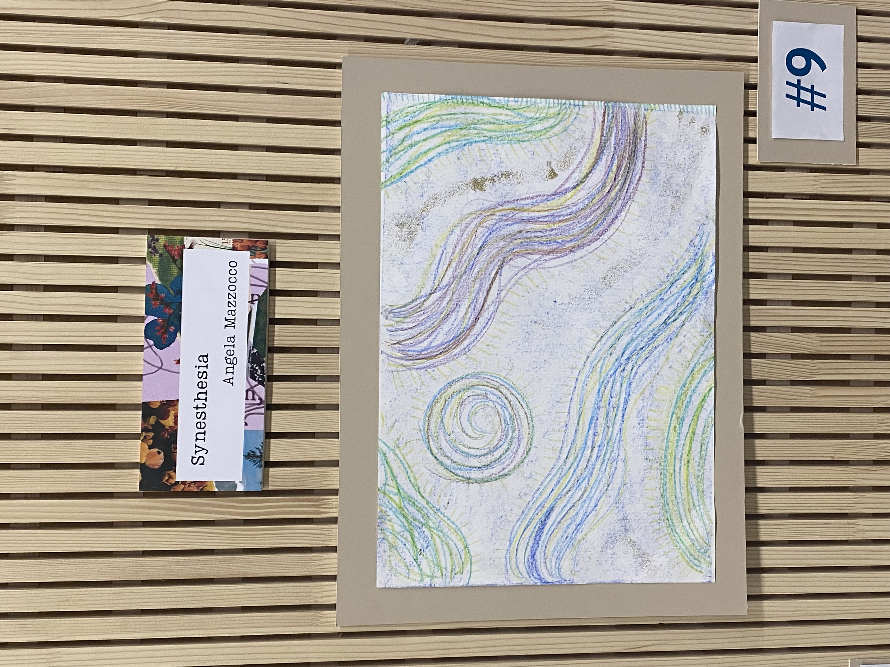
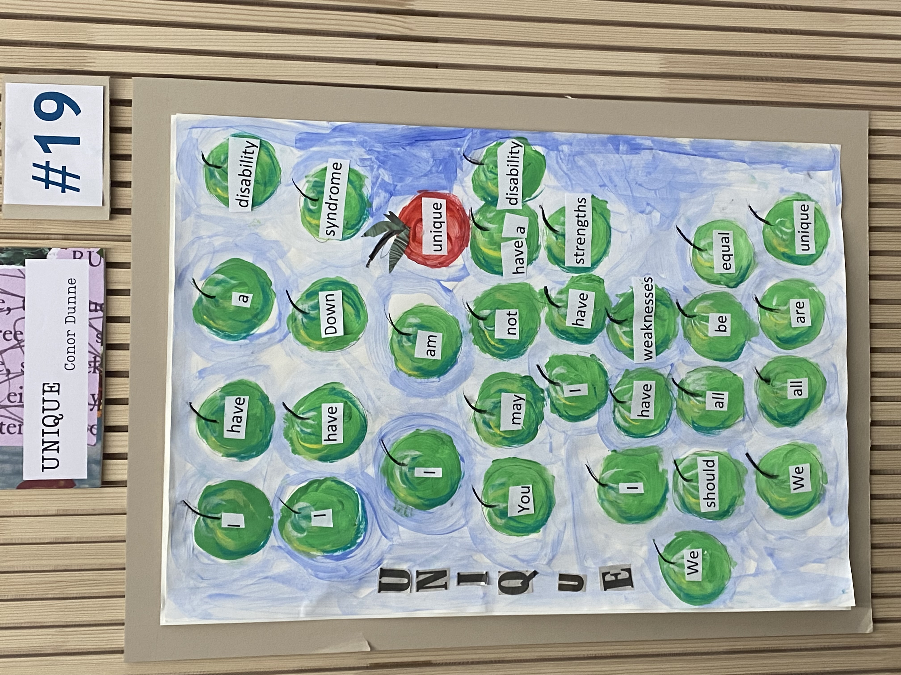
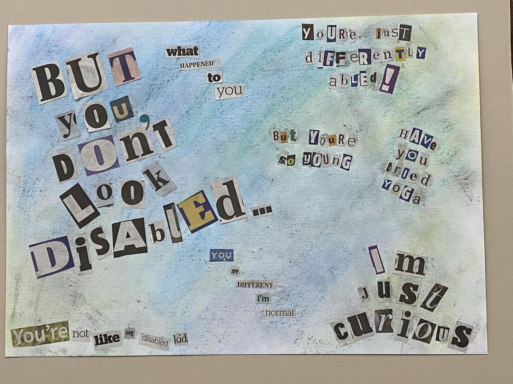

YOUR GUIDE TO THE
UNIQUE
EXHIBITION
28 NOV ~ 2 DEC 2022
An Mheitheal, Priniting House Square
Trinity College Dublin, The University of Dublin.
Use Scrolling Bar on left to navigate UNIQUE EXHIBITION.
Click on the Toggle Scrolling Bar button to hide the Scrolling bar on the left.
The Trinity Ability co_op and TCDSU are excited to present the Disability Art and Poetry Exhibition 2022 "Unique: A Disabled Perspective".
This exhibition contains work from disabled Trinity staff and students (diagnosed or self-identifying).
THE BACKGROUND
This is the second year of Trinity’s Disability Art Exhibition. Last year the exhibition took place in the newly opened Hamilton Zóin Mac Leinn with the theme “Defining Disability”.
The exhibition is a collaboration between the Trinity Ability co_op and the Trinity College Dublin Student's Union (TCDSU). The exhibition takes place in An Mheitheal, in Printing House Square.
The exhibition is run during Disability Awareness Week (28th Nov – 2nd Dec) in the run-up to the national International Day of Persons with Disabilities (3rd Dec).
A huge thank you to the Trinity Disability Service, and Declan Treanor, Director of the Trinity Disability Service, for all their help and support with the exhibition.
Our sincerest thanks to the artists and poets who have submitted their extraordinary work!
THE WORKSHOPS
In preparation for the exhibition, Trinity Ability co_op ran 3 optional preparation workshops.
- Demystifying Art
- Poetry: Discovering your Process
- Art for All
The Ability co_op would like to express their thanks to the Douglas Hyde Gallery for providing space for these workshops.
THE PEOPLE
HEAD OF UNIQUE COMMITTEE
Rachel Murphy, Disability Service Graduate Intern 2022/23
UNIQUE COMMITTEE
- Gale Aitken
- Ross Ó Colmáin
- Rosie Connolly
- Evan Cryan
- Mark Likeman
- Ellen Rafferty
- Abby Settlemier
- Ben Rowesome
STUDENT UNION REP
Rosie Joyce
#1 A Closer Look ~ Brad Lee
Alt Text: A black and white detailed ink drawing of a lion resting on savannah plains.

Alt Text: An ink and marker drawing of a quiet neighbourhood at night, with a cityscape in the background.

Alt Text: A black and white ink drawing of a white tiger sitting in a tree in a jungle.

A Closer Look & Unique Perspective
My art is ink-based and usually revolves around landscapes and scenes; I believe the fine level of detail is its defining feature. I wanted to submit some works that showcase this and break down common stereotypes around people with ADHD. We can be disciplined, we can focus long enough to create amazing things - all we need is clarity of purpose. Our disabilities don 't define us, but they may help us - I strongly believe my ADHD and ASD have gifted me with my eye for detail, and my ability to translate it onto paper."
#2 Blue Nights ~ Ben Rowsome
Blue nights come and go,
As still as the Angel of the North
But with a finer finish.
In the dark grasses a league away,
The horses’ screams are muffled
By the clouds starchy as pillows,
A sight to leave even
Stubbs speechless.
I’m sat here in this lodge,
Feeling safe as a tiger shark
Preserved in formaldehyde,
But perhaps just as lifeless—
Somehow, I write to stay alive,
Some Mae West keeping this
Shit-show afloat. Now,
I feel dark as Munch.
#3 Lár Baill ~ Ross Ó Colmáin
Lár Baill
Tá mé i lár baill
Is bhíos le cuimhne na gcat
Idir trí bheatha
Aerach
Gaelach
Míchumasach
Más ann d’áit dom
Is spás na beirte é
Aerach is Gaelach
Aerach is Míchumasach
Ach sin é
Tá mé san imeall
Gan teangmháil cheart agam
Gan cónaí, gan tearmann
I lár baill
Ar mhiste sin?
Níl a fhios agam
B’fhéidir go dtiocfaidh spás chun blátha
Lár Baill & Unique Perspective
As a gay, disabled Irish speaker, I belong to many communities but I've never really felt at home in any of them. There are gay Irish speakers, there are gay disabled people but I've never met someone else who has all 3.
#4 The world is still the same! ~ Mona Nezamivand
It was dawn
The sky was twilight
I walked along the path to the ocean
Reached the oak trees.
I looked at the greatness of the forest,
Through a drop of dew
Resting in silence and peace
On a young silky leaf.
I asked the dew drop,
What happened?
What do I see?
Why is the world upside down?
Why everything is curvy?
Are trees rooted in the sky?
You little waterdrop!
Tell me.
Am I delusional?
Or this is your magic?
I pondered in silence
Astonished, amazed, speechless, and confused.
Then I heard a voice in my head saying:
Look closer!
The world is still the same
Also, the jungle and the trees
No matter what angle,
No matter what shape.
Through a dew drop
A binocular or a magnifier
It does not matter
The world is still the same
It’s your perspective that matters
And your perception
It’s okay if dew drop makes the world looks unusual
The world is still the same
Nothing changes the reality
Do not let anything
Makes you believe that you are delusional
That you are abnormal.
You are unique
You are exceptional,
You are brilliant
You are the best version of you.
#5 disAbility Visibility (Body Dysmorphic Disorder) ~ Mark Likeman
Alt Text: In this photo there is a human non-gender skeleton hanging on a stand with wheels. The skeleton is draped with a full-length long-sleeved dress, with a pattern of different coloured flowers and skulls. The are strips of black fabric (bias) on the neckline and cuffs of the dress. Around the neck of the skeleton is a long black scarf with silver skull and crossbones. There is a tote bag around the left shoulder of the skeleton, made of the same fabric as the dress. There are a number of badges or pins on the skeleton and tote bag that reads "Invisibility disAbility", with a image of a skull adorned with different coloured flowers. The inspiration for the dress comes from The Day of the Dead (Día de Muertos or Día de los Muertos) a holiday traditionally celebrated on November 1 and 2, and widely observed in Mexico. The dress is made from 100% cotton twill fabric. To the right of the skeleton there is a poster the reads "disAbility Invisibility". Body Dysmorphic Disorder. Below this are the words; 1. Preoccupied with what I regard as physical defects. 2. Feeling ashamed. 3. Oversized clothes to hide my body. There is also an image of a male figure with face covered and wearing a boiler suit, with a skull on the front.
![In this photo there is a human non-gender skeleton hanging on a stand with wheels. The skeleton is draped with a full-length dress, with a pattern of different coloured flowers and skulls. The are strips of black fabric (bias) on the neckline and cuffs of the dress. Around the neck of the skeleton is a long black scarf with silver skull and crossbones. There is a tote bag around the left shoulder of the skeleton, made of the same fabric as the dress. There are a number of badges or pins on the skeleton and tote bag that reads 'Invisibility disAbility', with a image of a skull adorned with different coloured flowers. The inspiration for the dress comes from The Day of the Dead (Día de Muertos or Día de los Muertos) a holiday traditionally celebrated on November 1 and 2, and widely observed in Mexico. The dress is made from 100% cotton twill fabric. To the right of the skeleton there is a poster the reads 'disAbility Invisibility'. Body Dysmorphic Disorder. Below this are the words; 1. Preoccupied with what I regard as physical defects. 2. Feeling ashamed. 3. Oversized clothes to hide my body. There is also an image of a male figure with face covered and wearing a boiler suit, with a skull on the front.](invisible-disability.JPG)
#6 Inclusiveness ~ Dale O'Neill
Alt Text: In this drawing there is an umbrella. The unbrella is sectioned into four colurs; red, blue, green, and yellow. The are words above the umbrella; Autism, Disorder, and umbrella. Below the canopy of the umbrella are the words; Dyspraxia, ADAH, Dyslexia, and OCD. Below the umbrella are the words; Human Rights. Below this are 4 sentences, and there are circles at the beginning of each sentence. The circles are in different colours; blue, green, yellow, and red. The blue circles reads 'Right to equality + inclusiveness in society and equal rights and opportunities in the workplace. As outlined in the Universal Declaration of Human Rights'. The green circle reads "Right to Education". The yellow circle reads "Freedom of Opinion". The red circle reads "Right to adequate Living Standard."
![In this drawing there is an umbrella. The unbrella is sectioned into four colurs; red, blue, green, and yellow. The are words above the umbrella; Autism, Disorder, and umbrella. Below the canopy of the umbrella are the words; Dyspraxia, ADAH, Dyslexia, and OCD. Below the umbrella are the words; Human Rights. Below this are 4 sentences, and there are circles at the beginning of each sentence. The circles are in different colours; blue, green, yellow, and red. The blue circles reads 'Right to equality + inclusiveness in society and equal rights and opportunities in the workplace. As outlined in the Universal Declaration of Human Rights'. The green circle reads 'Right to Education'. The yellow circle reads 'Freedom of Opinion'. The red circle reads 'Right to adequate Living Standard.'](inclusivness-dale-oneill.jpg)
#7 Express Locomotives ~ Rosie Connolly
Alt Text: The painting is watercolour and lined with black. It depicts a train station, viewed from a side on angle. To the foreground is a person waiting for the train, wearing grey headphones and engrossed in reading. Also to the foreground is a Dart train, in which Totoro and No Name are visibly sitting in the driver's carriage. To the background is a blurred crowd, and a sunset or a sunrise, whichever you prefer. To the side is a sign - it is cut off from the viewpoint but reads "Express Locomotives - One Stop Never Stop - Locomoting since 1999".
![The painting is watercolour and lined with black. It depicts a train station, viewed from a side on angle. To the foreground is a person waiting for the train, wearing grey headphones and engrossed in reading. Also to the foreground is a Dart train, in which Totoro and No Name are visibly sitting in the driver's carriage. To the background is a blurred crowd, and a sunset or a sunrise, whichever you prefer. To the side is a sign - it is cut off from the viewpoint but reads 'Express Locomotives - One Stop Never Stop - Locomoting since 1999'.](https://www.scss.tcd.ie/~connolr3/unique/art_pieces/r_connolly.jpg)
Express Locomotives & Unique Perspective
Unique: ASD is an invisible disability but to me autistic people always have a little uniqueness or sparkle to them. I think we have a sixth sense in sensing kindred spirits - why most of us tend to unknowingly flock together.
Perspective: While not perhaps the intended interpretation, I tried to incorporate physical perspective into my drawing. The train station is viewed from a side on angle.
#8 Luke 1:26-38 ~ Gale Aitken
The ground is
Cold beneath my
Feet at this
Time of year.
Blue-tac stained beige wall raining
through the bus-shut windows light
falls and I dissolve into another stain
on the chair a new-lily addition to
blue upholstery the
First cold night
Sweeps me dizzy.
A city is
Sexiest when it’s
Just actively trying
To kill me
Is this the only time the silver fish
writhe-legged in the shower weak at
the head and soft in the knees sweat
seeping into the uncased pillows
I can’t
Ever seem to
Write my dreams.
The angel moved
On. And his
Shoelaces were wet
And his keys
Kept falling out
Of his pocket.
#9 Synesthesia ~ Angela Mazzocco
Alt Text: There are many colorful lines moving with each other in waves and circles, drawn with crayon. Around the waves and circles, there are short, even yellow lines. There are a few more waves made of gold glitter.
Synesthesia & Unique Perspective
My Autistic mind works differently than most, and this is often a wonderful gift. This piece shows how I experience music- it is not just sound but also beautiful colors, shapes, and movement. This unique experience is called synesthesia. I created this piece to represent what I see while listening to "Spring 1" by Max Richter, a recomposition of Vivaldi's Spring.
#10 My Invisible Disability ~ Mark Likeman
My Invisible Disability,
is Divisible by my Ability.
My Invisible Disability,
isn’t my Inequality.
My Invisible Disability,
doesn’t diminish my Capability.
My Invisible Disability,
is my strength and my Fragility.
My Invisible Disability,
is part of my Individuality.
My Invisible Disability,
is Indivisible by my Incredulity.
I am Invisible,
and so is My Disability.
My Invisible Disability & Unique Perspective
I have accepted my invisible disabilities and because of this I have gained one quality that has helped me accomplish so much in my life and that is persistence. Knowing this about myself gives me the strength to wake up every morning and try to achieve my dreams. Even as a disabled mature student in Trinity, I am still learning how to build myself and my ways of being in the world again. I am better able to accept my disabilities and other parts of myself that I couldn’t before. Learning new things in has started the process of understanding myself as autistic all over again. Learning new things can be an intense psychological experience, a bit like setting the reset button on your sense of self. Although, my anxiety and my depression will never go away, that’s one exam I am always going to fail, no matter what.
#11 Joy ~ Grace O'Hanrahan
Alt Text: It is marker and ink pen art piece showing two people dancing. They are shaded in three shades of turquoise and the original pencil lines are still visible. The two figures' hands are almost touching. They are both wearing a tank top and loose trousers with hair that comes down to their shoulders. The first is heavily in shadow with their hair covering their face as they extend one arm up and one leg back in a pose similar to a ballet dancer. The second in leaning back with their face facing upwards, the weight bearing down on their left leg while raising the left arm.
![It is marker and ink pen art piece showing two people dancing. They are shaded in three shades of turquoise and the original pencil lines are still visible. The two figures' hands are almost touching. They are both wearing a tank top and loose trousers with hair that comes down to their shoulders. The first is heavily in shadow with their hair covering their face as they extend one arm up and one leg back in a pose similar to a ballet dancer. The second in leaning back with their face facing upwards, the weight bearing down on their left leg while raising the left arm.](https://www.scss.tcd.ie/~connolr3/unique/art_pieces/g_ohanrahan.jpg)
Joy & Unique Perspective
I made this piece after a period of prolonged illness that impeded my mobility. I was unable to properly walk or stand for anything other than short bursts. I made this piece on the first day I was able to walk independently without severe pain because the amount of joy I felt in the simple motion made me feel like I was dancing. To the able-bodied, walking is a simple act but to me, it was exhilarating.
#12 Untitled, April 2020 ~ Ben Rowsome
Here is the snake that drives
Its fangs into the emblem of my regret,
The holy trinity of venom, gold and blood
Enough to hurl any recrudescence of pride
From the precipice of my soul,
Now standing ajar
Like it’s waiting for the warlords
Of memory to suture everything
Back to the way it was—
A lake with sand on all sides,
Imperturbable, the meniscus
Solidifying, remembering old songs
That render time rheumatic
And drive away the sordid snake.
#13 Wheeled In ~ Gillian Cronin
I am not a disability, as you may think,
I am me – a person – and that’s all you should believe,
I can do things, just like everyone else you see,
It may be done differently, but it’s personal to me.
Yes, I know I have a disability, it’s easy to see,
But should disability be based on what you can see?
I can overcome things, some may not believe,
I may not have any legs, but that doesn’t mean I won’t succeed.
When working with someone who has a disability,
Remember we fight everyday for inclusion, you see,
For me to live life, independently,
I will need to use my wheelchair, so please just let me be.
Wheeled In & Unique Perspective
My poem is based on someone who needs to use a wheelchair for everyday life and how and that it will take them longer to complete everyday tasks. It's important to know this as people with disabilities need longer time and we need everybody to be a bit more understanding even with the hidden disabilities which is what I have myself.
#14 Vacant ~ Holly Thompson
Alt Text: My piece represents the alienation felt by the disabled person, how the daily preoccupations of society are overshadowed by the disability leaving you mentally vacant.

Vacant & Unique Perspective
My piece represents the alienation felt by the disabled person, how the daily preoccupations of society are overshadowed by the disability leaving you mentally vacant.
#15 Acceptance ~ Sheila Keegan
My perspective is hidden but not my age.
This is not a disability though may be viewed as such.
I watch how you view me as you try to decipher my hidden perspective-my secret concern.
But you can’t- it’s not allowed.
So, you wait for me to disclose and when I don’t you seem disappointed.
With me.
My unique perspective is born out of my unique life,
I am not young, I do not have a visible disability, I am normal, I am not old,
I just am,
Accept me as you would another.
Do not ask me why I am here,
I belong here, disability and all
I do not owe you an explanation.
I am in pain,
Almost every day,
I walk with pain as my skin,
I am tired.
I am not old.
And yet out there you would love to know so that you can KNOW me.
But I am not my disability,
I just am,
If you accept me then you accept that you do not know all of me as I do not know all of you
That is alright-With ME.
Acceptance is not yours to give nor mine to receive.
Acceptance must be the norm.
I do not know why you are here, I never ask.
Do not ask me why I am here,
I belong here, disability and all
I do not owe you an explanation.
My perspective is hidden but not my age.
Accept me as you would another,
Do not ask me why I am here,
I belong here, disability and all,
I do not owe you an explanation.
Acceptance & Unique Perspective
This poem draws out how every person living with difference understood as disability in society is unique. No two people are the same even if they have the same diagnosis. Perspectives from the media or others are dangerous as society tends towards sweeping generalizations for their own comfort. The voice of the person is rarely heard as we are talked about and talked to much of the time. This poem allows that invisible person a voice while still maintaining their privacy as is their right.
#16 Citric Mirage ~ Rachel Murphy
Alt Text: Two portrait digital art pieces. On the left, a blue ceramic bowl of oranges with green leaves. This sits on a blue podium, where one orange sits on its own. The background is a light cream shade. On the right, a close up of the same image. The single orange on the podium takes the focus as it is bruised, textured and discoloured. Behind it, the blue bowl is visibly damaged with scratches, missing paint and bumps.

Citric Mirage & Unique Perspective
It is up to the viewer whether they see it or not. These still life images portray the same scene, but different perspectives. The first photo is idyllic, soft and easy to look at. The second is bruised, textured and fills the viewer with unease. That’s okay though, because you can just refocus on the first image and pretend you never saw the rotting orange and damaged bowl.
I have found benefits to being able to shift focus away from my invisible disability throughout my life. I felt like I had control over it; a sense of autonomy. I was once in the bowl of oranges, hiding among the crowd. I chose to change this and I have more in common with the orange outside of the bowl. Now that I have began to sit confidently in my identify as a disabled person, I have realised the limitations of that agency.
Even when I choose to make my disability visible, many people still do not see or view it in a different way than I do. This has been a surprising perspective to gain.
#17 Lockdown, April 2020 ~ Ben Rowsome
Night:
Moon bleeds. Stars leak anxious light.
Wind howls like a psychiatric patient.
Sleep is now the desert gem I have crossed
Miles throughout the night to seize,
But it won’t be long before I tire out
And the quicksand shows me instead.
Day:
Sun bleeds. Clouds leak anxious rain.
Wind howls like a psychiatric patient.
I yearn for a semblance of touch, as
My worries congeal to make a barbed heart,
Slashing questions open and injecting
Terse answers like a coveted vaccine.
Everything in between:
Soul bleeds. Eyes leak anxious tears.
I think I am the psychiatric patient.
I see me in the dead mirror, and wish
That I was a mirror too, so we could
Blast infinitely out each other’s backs
And out of this hell we’re in.
Blue Nights
Blue nights come and go,
As still as the Angel of the North
But with a finer finish.
In the dark grasses a league away,
The horses’ screams are muffled
By the clouds starchy as pillows,
A sight to leave even
Stubbs speechless.
I’m sat here in this lodge,
Feeling safe as a tiger shark
Preserved in formaldehyde,
But perhaps just as lifeless—
Somehow, I write to stay alive,
Some Mae West keeping this
Shit-show afloat. Now,
I feel dark as Munch.
#18 Interwoven ~ Abby Settlemier
Alt Text: Braided silver wire is circled into a basket shape. The left side is finished and woven together with ribbon, while the right side is stretched, misshapen and gapping. The very end of the wire at the top begins to unravel and the edges are left sharp.

Interwoven & Unique Perspective
Being partially paralyzed is not something people tend to notice about me at first. My left side can normally compensate, but things slip through the cracks. The ribbon on the left side of my basket represents the strain I feel from my movement, while the right side of the basket is lose and coming apart, unable to perform its purpose due to the gaps. This piece is representative of years of posture, gait, and most importantly my mindset as every physical choice I make I have to ask myself if I can safely perform that task, or if I will slip, trip, and fall through those gaps.
#19 UNIQUE ~ Conor Dunne
Alt Text: It looks like apple with the world from the poem, all the apple is green except one is red.
UNIQUE & Unique Perspective
I wrote a poem I use paint and draw it relates to my life. I called my poem Unique.
#20 That I must climb ~ Faolán Doecke Launders
Steep, cracked, and jagged, it stands,
Taller than the clouds, wider than the seas.
The night sky looms overhead, yet there are no stars,
While dark and grey clouds slip down its rough edges.
The only light peeks from within the cracks along its face,
As if trying to reach out its arms to me.
I look below, I see no floor,
I look above, I see no end,
I stand somewhere along its face.
All I know is that I must climb.
Even if I lose grip and slip,
Even if debris comes crashing down,
Even if my hands bruise, my bones crack, my arms tear,
I must keep my hold.
When does this end, where does this even bring me.
Why must I climb at all.
As I climb, I begin to lose myself,
Until I find a crack of light, a window of brightness that pierces from the other side,
When I look in, I see everyone, I see you, peaceful, joyful,
Yet you do not look back at me, you cannot see me,
It is then that I find myself, and I recall why I am here, and why I am climbing at all,
So that one day, I can reach this summit,
And on that day,
I will finally be able to truly say Hello,
I will finally be able to Laugh and Live,
I will finally be able to be the best version of myself.
And all that I hope, is that when I see you on that summit,
You’ll still be there to say Hello back.
So please wait a little longer for me, okay?
I just have to climb some more.
Just a little more…
…that I must climb.
That I Must Climb & Unique Perspective
The poem is titled 'That I Must Climb' and is inspired by how people, particularly those with disabilities, must work hard to achieve the same level of happiness and self-fulfilment as what we would think is normal. We may feel separated from the world, and everyone in it simply because we feel as if we alone are the issue, and that we alone have a seemingly impossible and neverending task of trying to maintain ourselves while everyone else simply lives on, leaving us behind. Sometimes we forget where we are even headed, we forget the main component that dictates who we are as an individual and who we are as a part of the community we build around ourselves. With a glimpse into that vision, we can be motivated to continue to improve, to learn, to live, and to become the best version of ourselves, and thus in turn inspire others, so that they may find themselves.
#21 heAD in tHe clouDs ~ Anon
Alt Text: A digital art piece entitled Head in the Clouds. Pictured is a pixilated digital art piece that reads “head in the clouds in bubble writing”. Each letter is a different bright colour. Each word takes up ⅓ of the page. In the center of the page is the word ‘the’ which is merged with an oval medical pill. The pill has a green skull in the center. Underneath the word, ‘the’ is the word ‘clouds’ which is drawn to mimic city buildings and skyscrapers and is surrounded by clouds. The pixilated image is styled similarly to street graffiti and from far away it has almost a kaleidoscope effect.
![A digital art piece entitled Head in the Clouds. Pictured is a pixilated digital art piece that reads “head in the clouds in bubble writing”. Each letter is a different bright colour. Each word takes up ⅓ of the page. In the center of the page is the word ‘the’ which is merged with an oval medical pill. The pill has a green skull in the center. Underneath the word, ‘the’ is the word ‘clouds’ which is drawn to mimic city buildings and skyscrapers and is surrounded by clouds. The pixilated image is styled similarly to street graffiti and from far away it has almost a kaleidoscope effect.](https://www.scss.tcd.ie/~connolr3/unique/art_pieces/anon.JPG)
#22 A Journey to My Future ~ Emma McGrath
From a Young Age, I struggled in school because I have a learning disability and speech impediment. I have SNAs in classes to help me, and I was grateful for the help but always wished I could have been in class and working on my own like the other students. I was in the mainstream class for maths for a while but then I got moved to another class. I really like the teachers in the one to one class. I always wanted to be in the mainstream class, but would have struggled so much in a mainstream class.
Now I am in Trinity College I am doing the same work as everyone I am loving the course. I am on the road to getting a job that will hopefully be accomodating to me and my disability. That is why I think everyone has a right to education, even those people who have a disability where you want to be your life. If it takes longer it will be worth it. I think I am in a course that suits me well and I have made new friends. We are all in it together. It feels like a community and we all help each other.
#23 In the Omphalos of Night ~ Ben Rowsome
Thoughts swimming in the dark,
Their feelers sprouting like black beanstalks
In the Garden of 3 a.m.—
The first one hardly moves at all,
But just floats there with the stillness
Grief is famous for – an avuncular mummy
Lost in the black ocean of time—
This one here thinks it’s a vampire
Donning a blood-red military jacket
And a long zebra-skin cloak,
Ready to turn my mother and father
Over to the dark side like animals—
Finally, the blind farmer,
Tending to my every anxiety—
All around, forbidden pastures
Are teeming with walking scarecrows,
All my family’s forgotten faces
Forcefully sewn onto each one.
Insomnia and all her friends
Rule the sleep in my eyes
On the toes of morning,
The furious skylight blasting
The last of the Zombie Kings
From my latest nightmare—
Whenever that truly was.
#24 Everyday Ableism ~ Angela Mazzocco
Alt Text: Clippings of words and letters from newspapers are arranged into text with phrases like “but you don’t look disabled”, “have you tried yoga?”, “you’re not like my disabled kid”, “but you’re so young” and “what happened to you”. The background has many colors from pastels, mixed and blending into each other.
Everyday Ableism & Unique Perspective
I made a mixed media piece using pastels and newspaper clippings. I wanted to show my perspective of having an invisible disability, and the ableist things people often say to me. Their words float around in my head like the letters from the newspaper, a constant reminder of their hurtful opinions.
#25 An Untitled Poem ~ Elliot Gallogly
Heat up the pan,
Drop some butter,
Sizzle pop, sizzle pop.
Crack the egg on
The side of the pan,
Lift it up, up, up
And let it fall.
Sizzle sizzle pop.
Crack the next egg,
Lift it up, up, up.
Let it fall.
Gold smeared through white.
Do you not know
How to cook a fucking egg?
Here I'll show you.
Crack the egg, lightly
Tap it with a knife,
Once or twice, make a line
And split it. Don't dig
Your fingers in.
And lift it up, lower, lower.
Let it glide, guide it,
And there.
Now throw out your eggs,
And do it again
until you can cook an egg
Without breaking the yolk.
Unique Perspective
This is about how things that seem so simple to abled people, like frying an egg, can be made very difficult by disabilities of all kinds - and how confused and even angry abled people can get by disabled people's disabilities interfering with their abilities to do these "mundane and simple" things.
#26 Dyslexia: a positive perspective ~ Catherine O'Reilly
Alt Text: Silhouettes of one individual expressing an emotion relating to the following five words aimed to represent Undiagnosed Dyslexia vs. Diagnosed Dyslexia: No support vs. Support, Problem vs. Solution, Lost vs. Empowered, Negative self-talk vs. Positive self-talk, Not good enough vs. Good enough.

Dyslexia: a positive perspective & Unique Perspective
Growing up, in school and at home, I was always behind my friends in reading and writing, not to mention my poor handwriting. So I decided to seek support when I started Trinity as a mature student. I was diagnosed with Dyslexia at age 50, and I would like to create one piece of Art Work in the form of a sketch with handwritten text to represent my experience of Undiagnosed vs. Diagnosed self-talk.
#27 The Finale ~ Jess Mannion
Ladies and gentlemen, boys and girls,
the show is about to start,
for your pleasure on front stage,
let me check the chart,
playing the expected socially constructed role,
at your mercy,
our leading actress,
please, take a curtsy.
Wearing her mask,
she will abandon her desires,
this fake, fraudster,
cheat is a woman who conspires.
So over to you,
the stage is all yours to reclaim,
don’t slip, keep your audience entertained.
Thank you for such a warm introduction,
I am ready to mould, negotiate; undergo reconstruction.
This mask, I use to cover up each and every flaw,
it’s my magic prop to prevent me drawing the short straw.
It hides all of my traumas and my true identity,
to avoid shame and stigma and keep some integrity.
Even though this mask is emotionally demanding,
the show must go on, to avoid any misunderstanding.
She is hiding her deficits, her disorder of the mind, restlessness,
inattentiveness and distracted combined.
She struggles with learning, immature,
impatient and impulsive, zones out,
too loud, too fast, interrupts and compulsive.
Can’t sit still, hyperactive, with a racing brain,
a peculiar character, that’s hard to explain.
Seeking recognition from others, to belong,
yet defiantly resisting, despising conformity… ITS WRONG!
But… I have the ability to hyper-focus with non-linear thinking,
that’s the tip of the iceberg,
my ship is not sinking.
Not constrained by conformity,
outside of the box thinker, driven for self-fulfilment,
a positive risk taker.
Brave, inspiring, resilient, inclusive, authentic,
Intelligent, fun, empathetic, a real romantic.
Quirky, entertaining, humorous, creative,
with passionate vision, truly innovative.
She wants to bring all of ‘me’ to the surface,
but then risks losing her life’s purpose.
Do you really think you will win the identity battle?
Inequality, suffering, never fitting in, all of this - dismantle?
Is a menu for loneliness, rejection, abandonment and exclusion,
is telling people this prosecution, really a solution?
The power of a label can literally imprison,
people focus on the misconceptions of your condition.
I am so desperate to fit in and find a ‘we’, NO! I’m not,
I despise it! I rebel! I disagree.
You’ve given me two voices, one with low self-esteem,
but I’m pushing that off stage,
I just want to be me.
I’m closing the curtain,
it’s the finale, taking a bow – I AM FREE!
I am a mother, a partner, a student, an educator, working class,
I am removing this final mask,
And I am showing all of you, that I have A-D-H-D.
The Finale & Unique Perspective
This poetry shows my struggle with 'coming out' after receiving a diagnosis of ADHD. I worried about the misconceptions of ADHD and as a result how others may have judged me and any negative impact this may have had. Although I battled it out with myself, I realised that ADHD has made me who I am, and although I have challenges, I would never change me or having ADHD, as I am unique, proud and owning it.
#28 The Conductor (Online Only!) ~ Vivienne Feely
Alt Text: The clay sculpture is of a female conductor who is looking upwards while shielding her eyes with her right hand, her left hand is slightly bent and curved out in front of her torso in 3rd position. The woman’s upper torso is covered in a bodice of small flowers which flow into a ballgown skirt adorned with four large flowers curving down the center of the skirt. There are musical notes anchored to the left and right sides of the dress. The hem of the dress is sculpted into a wavey pattern.

The Conductor & Unique Perspective
My clay piece describes how I feel to have adhd. I feel like a conductor of an orchestra, trying to organise a large number of different instruments. I see these instruments as my thoughts and how I feel overwhelmed with 101 things to think about at every moment. This is the biggest impact my adhd has on me.